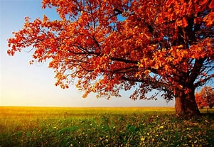
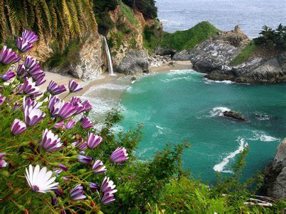

MI BIBLIOGRAFIA
Me llamo Mariana Gomez Crispin tengo 18 años, vivo en La Colonia Guadalupe Victoria y actualmente estoy estudiando en la Universidad Politecnica de Otzolotepec.
LO QUE ME GUSTA
Lo que mas me gusta es pasar tiempo con mi familia, el tener tiempo para mi realizar actividades que me gustan tambien me gusta pasar tiempo con mis amigos ir al cine a un parque o el solo tener una buena platica con ellos me gusta mucho,el leer libros tambien me gusta pero los que mas leo son los de las cualidades de las personas,psicologia, tambien libros sobre razonar o ficciones de amor, me gustam mucho las series y mi pelicula favorita es Yo Antes de Ti es fantastica esa pelicula, escuchar muusica relaja bastante me encanta el genero de Jazz mi cantate favorito de eso es Frank Sinatra, tambien me gustan las canciones de Selena Gomez, Olivia Rodrigo,The Weekend entre mas artistas, me encanta saber sobre otras culturas pero mas sobre asia el contienete de Sur Corea, sus tradiciones y su comida me encataria ir a ese pais por un tiempo pero seria en otoño el pais se ve hermoso el como esta con los arboles sus hojas como se caen el color cafe.

Me gusta ver el paisaje los bosques,las flores
